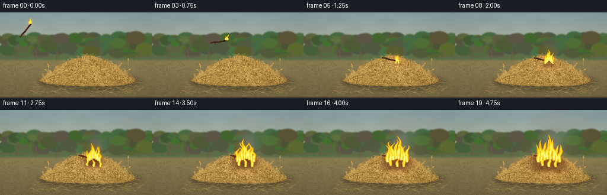
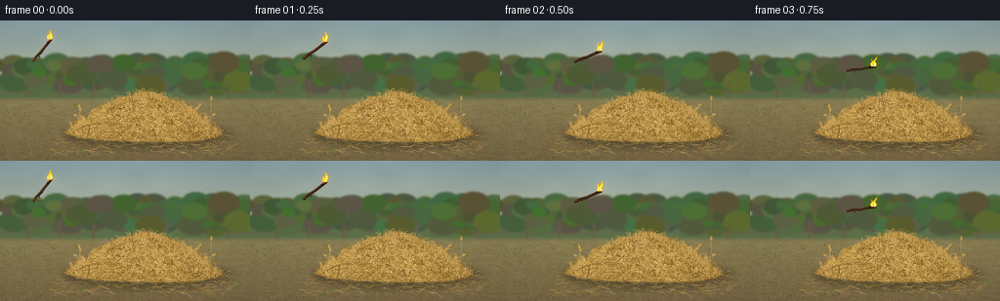

CODING AGENTS AS PIXEL WORLD MODELS
traex/GPT-6.1-Sol · phygen_143
点击播放 · 原生 RGB 像素
逐轮保存的候选
回放视频、检查图与代码变化。
每份候选均可单独播放。实际图片检查记录在下方工具轨迹中。
候选 01播放与检查图
点击播放 · 原生 RGB 像素


展开代码变化
--- 上一保存版本
+++ 本次保存版本
@@ -0,0 +1,330 @@
+"""Procedural RGB animation of a burning twig thrown into dry hay.
+Only numpy and Pillow are used; every frame is generated from geometry.
+"""
+from pathlib import Path
+import math
+import numpy as np
+from PIL import Image, ImageDraw, ImageFilter
+from artifact_io import save
+
+ROOT = Path(__file__).resolve().parent
+W, H, SCALE = 256, 144, 3
+SW, SH = W*SCALE, H*SCALE
+rng = np.random.default_rng(143)
+yy, xx = np.mgrid[0:SH, 0:SW].astype(np.float32)
+X, Y = xx/SCALE, yy/SCALE
+
+def pts(v):
+ return [(round(x*SCALE), round(y*SCALE)) for x,y in v]
+
+def line(d, p, color, width=.3):
+ d.line(pts(p), fill=color, width=max(1,round(width*SCALE)))
+
+def ellipse(d, box, color):
+ d.ellipse(tuple(round(v*SCALE) for v in box), fill=color)
+
+# Bilinear periodic value noise. Advection makes all flame and smoke motion
+# temporally coherent instead of unrelated random drawings per frame.
+noise_grid = rng.random((128,128)).astype(np.float32)
+def noise(x,y):
+ x=np.asarray(x); y=np.asarray(y)
+ ix=np.floor(x).astype(np.int32); iy=np.floor(y).astype(np.int32)
+ u=x-ix; v=y-iy
+ u=u*u*(3-2*u); v=v*v*(3-2*v)
+ a=noise_grid[iy%128,ix%128]
+ b=noise_grid[iy%128,(ix+1)%128]
+ c=noise_grid[(iy+1)%128,ix%128]
+ d=noise_grid[(iy+1)%128,(ix+1)%128]
+ return (a*(1-u)+b*u)*(1-v)+(c*(1-u)+d*u)*v
+
+# Warm, subtly out-of-focus farm landscape.
+sky=np.zeros((SH,SW,3),np.float32)
+f=np.clip(Y/87,0,1)
+for k,(a,b) in enumerate(zip((136,161,167),(198,191,150))):
+ sky[:,:,k]=a*(1-f)+b*f
+cloud=noise(X/28,Y/13)
+sky += (cloud[:,:,None]-.5)*7
+background=Image.fromarray(np.uint8(np.clip(sky,0,255)))
+d=ImageDraw.Draw(background)
+# Low, distant green hills.
+hill=[(-10,69)]
+for x in range(-10,270,4):
+ hill.append((x,61+3*math.sin(x*.032)+2*math.sin(x*.091)))
+hill += [(270,95),(-10,95)]
+d.polygon(pts(hill),fill=(92,111,73))
+for i in range(180):
+ cx=rng.uniform(-20,277); cy=rng.uniform(41,67)
+ rad=rng.uniform(5,17)
+ col=(int(rng.uniform(66,98)),int(rng.uniform(83,115)),int(rng.uniform(46,73)))
+ ellipse(d,(cx-rad,cy-rad*.63,cx+rad,cy+rad*.7),col)
+# Distant hedgerow and old fence, kept subordinate to foreground.
+for x in [-5,28,61,96,234,265]:
+ line(d,[(x,63),(x-.8,91)],(88,76,56),2.1)
+ line(d,[(x-.4,63),(x+.4,89)],(140,120,85),.5)
+for ya in [73,81]:
+ line(d,[(-5,ya),(101,ya+2)],(107,94,69),1.5)
+ line(d,[(227,ya+1),(267,ya+1)],(107,94,69),1.5)
+background=background.filter(ImageFilter.GaussianBlur(1.0*SCALE))
+base=np.array(background,dtype=np.float32)
+ground_mask=np.clip((Y-78)/5,0,1)
+soil_noise=noise(X/5,Y/2)*9+noise(X*1.7,Y*1.3)*5
+soil=np.empty_like(base)
+for k,(top,bottom) in enumerate(zip((133,121,77),(111,93,61))):
+ a=np.clip((Y-80)/64,0,1)
+ soil[:,:,k]=top*(1-a)+bottom*a+soil_noise
+base=base*(1-ground_mask[:,:,None])+soil*ground_mask[:,:,None]
+background=Image.fromarray(np.uint8(np.clip(base,0,255)))
+d=ImageDraw.Draw(background)
+# Scattered dirt, straw, and little sparse grass clumps.
+for i in range(3100):
+ px=rng.uniform(0,256); py=rng.uniform(81,145)
+ perspective=(py-78)/66
+ length=rng.uniform(.2,2.2)*perspective+.1
+ col=tuple(int(v) for v in np.array([104,92,57])+rng.uniform(-22,32))
+ line(d,[(px,py),(px+length,py-rng.uniform(-.2,.5))],col,.16)
+for i in range(200):
+ px=rng.uniform(0,256); py=rng.uniform(87,145)
+ if 64<px<231 and 90<py<125: continue
+ for j in range(rng.integers(2,6)):
+ hh=rng.uniform(1.8,6.2)*(py/145)
+ col=tuple(int(v) for v in np.array([110,117,62])+rng.uniform(-23,24))
+ line(d,[(px,py),(px+rng.uniform(-3,3),py-hh)],col,.3)
+
+# Wide contact shadow sets the hay firmly on the earth.
+shadow=Image.new('RGBA',(SW,SH)); sd=ImageDraw.Draw(shadow)
+ellipse(sd,(63,102,237,132),(35,25,13,89))
+ellipse(sd,(88,110,220,127),(31,24,12,93))
+shadow=shadow.filter(ImageFilter.GaussianBlur(3.0*SCALE))
+background=Image.alpha_composite(background.convert('RGBA'),shadow).convert('RGB')
+
+# Asymmetric, loose hay heap, with an organic silhouette.
+outline=[(65,115),(74,110),(78,103),(90,99),(95,91),(107,86),
+ (117,83),(124,78),(135,78),(143,73),(153,73),(162,75),
+ (170,78),(181,83),(188,87),(201,94),(206,101),(217,107),
+ (222,113),(228,117),(218,121),(198,124),(166,125),(134,124),
+ (106,123),(80,120)]
+mask=Image.new('L',(SW,SH)); md=ImageDraw.Draw(mask)
+md.polygon(pts(outline),fill=255)
+mask=mask.filter(ImageFilter.GaussianBlur(.55*SCALE))
+M=np.asarray(mask,dtype=np.float32)/255
+hay=np.zeros((SH,SW,3),np.float32)
+shading=13*np.cos((X-129)/52)-.30*(Y-77)-.12*(X-120)
+texture=(noise(X/3,Y/2)-.5)*24+(noise(X*1.8,Y*2)-.5)*15
+for k,b in enumerate((177,137,64)):
+ hay[:,:,k]=b+shading+texture
+hay_image=Image.fromarray(np.uint8(np.clip(hay,0,255)))
+hd=ImageDraw.Draw(hay_image)
+# Thousands of discrete cylindrical stems at many angles, with highlights.
+for i in range(7200):
+ px=rng.uniform(63,230); py=rng.uniform(72,126)
+ if M[min(SH-1,int(py*SCALE)),min(SW-1,int(px*SCALE))]<.8: continue
+ theta=rng.uniform(0,math.pi)
+ if rng.random()<.40:
+ theta=.4+(px-147)/83*.7+rng.normal(0,.6)
+ length=rng.uniform(3,18)
+ dx=math.cos(theta)*length/2; dy=math.sin(theta)*length/2
+ bend=rng.normal(0,1.3)
+ p=[(px-dx,py-dy),(px+dy*.10+bend,py-dx*.08),(px+dx,py+dy)]
+ shade=rng.uniform(-50,51)
+ shade-=max(0,py-105)*.48+max(0,px-154)*.14
+ col=tuple(int(np.clip(c+shade,0,255)) for c in (193,155,80))
+ if i%5==0:
+ line(hd,[(a+.22,b+.3) for a,b in p],(112,81,33),.65)
+ line(hd,p,col,rng.uniform(.18,.47))
+ if i%6==0:
+ line(hd,[(px-dx,py-dy),(px-dx*.15,py-dy*.15)],(235,205,129),.18)
+ # Stalk joints are fine cross-striations rather than uniform spaghetti.
+ line(hd,[(px-dy*.035,py+dx*.035),(px+dy*.035,py-dx*.035)],(134,104,46),.24)
+background=Image.composite(hay_image,background,mask)
+d=ImageDraw.Draw(background)
+# Silhouette filaments and loose ends prevent the heap looking like a solid object.
+for i in range(450):
+ px=rng.uniform(69,228)
+ # Interpolate the upper rim of the heap.
+ top=74+41*(abs(px-148)/80)**1.5
+ py=top+rng.uniform(-.2,3)
+ length=rng.uniform(3,12)
+ theta=rng.uniform(-2.6,-.5)
+ col=tuple(int(v) for v in np.array([185,146,74])+rng.uniform(-35,44))
+ line(d,[(px,py+2),(px+math.cos(theta)*length*.55,py+math.sin(theta)*length*.45),
+ (px+math.cos(theta)*length,py+math.sin(theta)*length*.6)],col,.23)
+# Recognizable seed heads on occasional dry stems, without overloading the scene.
+for i in range(67):
+ px=rng.uniform(78,218); py=rng.uniform(93,124)
+ a=rng.uniform(-2.8,-.2); leng=rng.uniform(8,19)
+ dx,dy=math.cos(a),math.sin(a)
+ line(d,[(px,py),(px+dx*leng,py+dy*leng)],(213,174,97),.26)
+ endx,endy=px+dx*leng,py+dy*leng
+ for j in range(5):
+ u=j*.74
+ for s in [-1,1]:
+ qx=endx-dx*u; qy=endy-dy*u
+ line(d,[(qx,qy),(qx-dx*.7-dy*s*.85,qy-dy*.7+dx*s*.85)],(185+j*6,145+j*5,70+j*4),.52)
+# Flat wisps of spilled hay on the ground.
+for i in range(270):
+ px=rng.uniform(53,240); py=rng.uniform(116,136)
+ l=rng.uniform(2,13); a=rng.uniform(-.45,.45)
+ c=tuple(int(v) for v in np.array([174,140,78])+rng.uniform(-35,32))
+ line(d,[(px-l/2,py),(px,py+.6),(px+l/2,py+a*l)],c,.23)
+static=np.array(background).astype(np.float32)
+
+# Twig bark lines are fixed in twig coordinates, hence rotate together.
+bark_rng=np.random.default_rng(12)
+bark=[(bark_rng.uniform(-14,13),bark_rng.uniform(-.8,.8),bark_rng.uniform(.8,4.6)) for _ in range(24)]
+
+def twig_pose(t):
+ if t<1.1:
+ return 43+94*t, 30-13*t+51*t*t, -.9+t
+ age=t-1.1
+ # Small impact and settling, not a rebound off soft hay.
+ return 146.4+min(age, .35)*2,77.4+2.2*(1-math.exp(-age*12)),.2+.035*math.sin(age*14)*math.exp(-age*7)
+
+def draw_twig(image,t):
+ cx,cy,a=twig_pose(t)
+ ca,sa=math.cos(a),math.sin(a)
+ def tr(x,y): return (cx+ca*x-sa*y,cy+sa*x+ca*y)
+ d=ImageDraw.Draw(image)
+ p=[tr(-15,-.3),tr(-9,-.7),tr(-1,.2),tr(6,-.1),tr(15,.1)]
+ line(d,[(x+.3,y+.4) for x,y in p],(38,27,18),2.65)
+ line(d,p,(78,49,27),2.0)
+ line(d,[tr(-14,-.7),tr(0,-.65),tr(10,-.5)],(134,87,42),.55)
+ line(d,[tr(8,0),tr(15,0)],(30,24,18),2.1)
+ for x,y,l in bark:
+ line(d,[tr(x,y),tr(min(x+l,14),y-.2)],(48,33,22),.22)
+ line(d,[tr(-5,.1),tr(-8,3)],(67,42,23),.9)
+ line(d,[tr(11,-.5),tr(14,-.3)],(250,92,14),.5)
+ ellipse(d,(*tr(13.5,-.3),*tr(14.5,.7)),(246,124,24)) if False else None
+ return tr(14,0)
+
+def fire_field(t,sources):
+ strength=np.zeros((SH,SW),np.float32)
+ heat=np.zeros((SH,SW),np.float32)
+ for j,(cx,cy,h,w,phase) in enumerate(sources):
+ v=(cy-Y)/h
+ vv=np.clip(v,0,1)
+ # Narrow branching tongues lean and curl as heated gas rises.
+ shift=(np.sin(vv*7.5-t*7+phase)*.60+np.sin(vv*14-t*10+phase)*.22)*w*vv
+ shift+=vv*vv*1.6*math.sin(t*2+phase)
+ mid=cx+shift
+ width=w*(.56+.55*np.sin(np.pi*vv))*np.maximum(0,1-vv)**.72+.10
+ turb=(noise(X*.41+phase,Y*.30+t*3.5)-.5)*.46
+ turb+=(noise(X*.96+13,Y*.80+t*8)-.5)*.19
+ core=1-(np.abs(X-mid)/width)**1.45+turb
+ vertical=np.clip((1-v)*12,0,1)*np.clip((v+.065)*18,0,1)
+ density=np.clip(core*2.6,0,1)*vertical
+ density*=np.clip((core+.14)*4,0,1)
+ strength=np.maximum(strength,density)
+ hot=np.clip(core,0,1)*(1-.5*vv)
+ heat=np.maximum(heat,hot*vertical)
+ return strength,heat
+
+
+def smoke_overlay(arr,t,tip):
+ # Long-lived rising parcels; new smoke comes only from the burning region.
+ alpha=np.zeros((SH,SW),np.float32)
+ tint=np.zeros_like(alpha)
+ rate=7
+ for k in range(int(t*rate)+1):
+ born=k/rate
+ age=t-born
+ if age<0 or age>3.8: continue
+ if born<1.1:
+ bx,by,ang=twig_pose(born)
+ bx+=14*math.cos(ang); by+=14*math.sin(ang)
+ density=.035
+ else:
+ bx=158+4*math.sin(k*3.91); by=77
+ density=.04+min(.055,(born-1.1)*.021)
+ cx=bx+age*5.5+math.sin(age*2.7+k*.9)*age*2.5
+ cy=by-4-age*(15+min(5,max(0,born-1.1)*2))
+ rx=2.2+age*7.2; ry=3.5+age*6.5
+ g=np.exp(-.5*(((X-cx)/rx)**2+((Y-cy)/ry)**2))
+ rough=.57+.6*noise(X/6+age,Y/5+age*2)
+ aa=g*rough*density*min(1,age*5)*math.exp(-age*.26)
+ alpha+=aa
+ tint+=aa*(.5+.5*min(age/2,1))
+ alpha=np.clip(alpha,0,.49)
+ smoke_color=np.empty_like(arr)
+ for c,b in enumerate([138,137,129]):
+ smoke_color[:,:,c]=b+14*noise(X/12+t*.3,Y/8+t)
+ return arr*(1-alpha[:,:,None])+smoke_color*alpha[:,:,None]
+
+frames=[]
+for idx in range(20):
+ t=idx/4
+ arr=static.copy()
+ age=max(0,t-1.1)
+ # Localized progressive blackening is constrained to the hay, not the air.
+ if age>0:
+ r=3+age*6.2
+ burn=np.exp(-((X-157)/(r*1.18))**4-((Y-88)/(r*.66))**4)
+ burn*=np.clip(age*.58,0,.90)*M
+ burn*=.7+.3*noise(X*.43,Y*.38)
+ char=np.empty_like(arr)
+ for c,b in enumerate((52,37,22)):
+ char[:,:,c]=b+noise(X*1.2,Y*.6)*13
+ arr=arr*(1-burn[:,:,None])+char*burn[:,:,None]
+ twig_im=Image.fromarray(np.uint8(np.clip(arr,0,255)))
+ tip=draw_twig(twig_im,t)
+ arr=np.asarray(twig_im,dtype=np.float32)
+ sources=[]
+ if t<1.1:
+ cx,cy=tip
+ # The burning tip stays aflame all the way through the throw.
+ sources=[(cx,cy,10.8+1.6*math.sin(t*13),2.7,.3),
+ (cx-2.5,cy,7.5+1.1*math.sin(t*17),1.8,2)]
+ else:
+ growth=np.clip((age-.1)/3.1,0,1)
+ h=10+34*growth**.85
+ spread=2+16*growth
+ for j in range(8):
+ off=(j-3.5)/3.5
+ bx=158+off*spread
+ by=80+6*abs(off)+1.6*growth
+ hh=h*(.57+.42*math.cos(off*1.1))*(.87+.13*math.sin(t*8+j*1.8))
+ sources.append((bx,by,hh,2.1+3.2*growth,j*1.57))
+ # Front-side incipient patches emerge outward from the impact point.
+ if age>1.2:
+ for j in range(3):
+ sources.append((147+j*11,94+2*math.sin(j),
+ (9+11*growth)*(.9+.14*math.sin(t*9+j)),2+2*growth,4+j))
+ # Restrained reflected orange light on adjacent straw, twig and soil.
+ cx,cy=tip if t<1.1 else (158,85)
+ glowr=9 if t<1.1 else 12+age*6
+ glow=np.exp(-((X-cx)/glowr)**2-((Y-cy)/(glowr*.82))**2)
+ gain=(.70+.09*math.sin(t*16))*(.33 if t<1.1 else .55+.18*age)
+ arr[:,:,0]+=glow*49*gain
+ arr[:,:,1]+=glow*15*gain
+ arr=smoke_overlay(arr,t,tip)
+ alpha,heat=fire_field(t,sources)
+ # Small lens/air glow around bright flames, never an opaque orange disc.
+ gl=Image.fromarray(np.uint8(alpha*95)).filter(ImageFilter.GaussianBlur(2.0*SCALE))
+ glow=np.asarray(gl,dtype=np.float32)/255
+ arr[:,:,0]+=glow*54; arr[:,:,1]+=glow*16
+ fire=np.zeros_like(arr)
+ fire[:,:,0]=255
+ fire[:,:,1]=67+186*np.clip(heat*1.32,0,1)**.64
+ fire[:,:,2]=3+175*np.clip((heat-.36)*1.65,0,1)**1.65
+ a=alpha*.97
+ arr=arr*(1-a[:,:,None])+fire*a[:,:,None]
+ im=Image.fromarray(np.uint8(np.clip(arr,0,255)))
+ d=ImageDraw.Draw(im)
+ # Incandescent embers rise with the flame rather than falling like sparks.
+ if t>1.35:
+ for k in range(int((t-1.35)*5)+1):
+ born=1.35+k*.2; a=t-born
+ if a<0 or a>1.45: continue
+ px=151+((k*13)%21)+a*(3+math.sin(k*2)*3)+math.sin(a*7+k)*1.1
+ py=80-a*(20+(k%3)*4)
+ if py<6: continue
+ bright=int(240-85*a)
+ line(d,[(px,py),(px-.2,py+.6)],(255,bright,55),.39 if a<.7 else .22)
+ # Gentle photographic falloff and stable fine grain unify the composition.
+ final=np.asarray(im,dtype=np.float32)
+ vignette=1-.065*((X-130)/170)**2-.055*((Y-76)/112)**2
+ grain=(noise(X*2.7,Y*2.1)-.5)*2.0
+ final=final*vignette[:,:,None]+grain[:,:,None]
+ frame=Image.fromarray(np.uint8(np.clip(final,0,255))).resize((W,H),Image.Resampling.LANCZOS)
+ frames.append(np.asarray(frame,dtype=np.uint8))
+save(np.stack(frames),ROOT)
+print('Saved 20 RGB frames, 256x144, 4 fps, to',ROOT)
可观测工具轨迹
实际执行的命令与返回图片。
命令 1exit 0
/bin/bash -lc "ls -la && cat prompt.txt && printf '\\n---RULES---\\n' && cat GENERATION_RULES.md && printf '\\n---SPEC---\\n' && cat task_spec.json"
命令 2exit 0
/bin/bash -lc "cat artifact_io.py && python - <<'PY'
import numpy, PIL
print('numpy',numpy.__version__,'PIL',PIL.__version__)
PY"命令 3exit 0
/bin/bash -lc "cat > generate.py <<'PY'
\"\"\"Procedural RGB animation of a burning twig thrown into dry hay.
Only numpy and Pillow are used; every frame is generated from geometry.
\"\"\"
from pathlib import Path
import math
import numpy as np
from PIL import Image, ImageDraw, ImageFilter
from artifact_io import save
ROOT = Path(__file__).resolve().parent
W, H, SCALE = 256, 144, 3
SW, SH = W*SCALE, H*SCALE
rng = np.random.default_rng(143)
yy, xx = np.mgrid[0:SH, 0:SW].astype(np.float32)
X, Y = xx/SCALE, yy/SCALE
def pts(v):
return [(round(x*SCALE), round(y*SCALE)) for x,y in v]
def line(d, p, color, width=.3):
d.line(pts(p), fill=color, width=max(1,round(width*SCALE)))
def ellipse(d, box, color):
d.ellipse(tuple(round(v*SCALE) for v in box), fill=color)
# Bilinear periodic value noise. Advection makes all flame and smoke motion
# temporally coherent instead of unrelated random drawings per frame.
noise_grid = rng.random((128,128)).astype(np.float32)
def noise(x,y):
x=np.asarray(x); y=np.asarray(y)
ix=np.floor(x).astype(np.int32); iy=np.floor(y).astype(np.int32)
u=x-ix; v=y-iy
u=u*u*(3-2*u); v=v*v*(3-2*v)
a=noise_grid[iy%128,ix%128]
b=noise_grid[iy%128,(ix+1)%128]
c=noise_grid[(iy+1)%128,ix%128]
d=noise_grid[(iy+1)%128,(ix+1)%128]
return (a*(1-u)+b*u)*(1-v)+(c*(1-u)+d*u)*v
# Warm, subtly out-of-focus farm landscape.
sky=np.zeros((SH,SW,3),np.float32)
f=np.clip(Y/87,0,1)
for k,(a,b) in enumerate(zip((136,161,167),(198,191,150))):
sky[:,:,k]=a*(1-f)+b*f
cloud=noise(X/28,Y/13)
sky += (cloud[:,:,None]-.5)*7
background=Image.fromarray(np.uint8(np.clip(sky,0,255)))
d=ImageDraw.Draw(background)
# Low, distant green hills.
hill=[(-10,69)]
for x in range(-10,270,4):
hill.append((x,61+3*math.sin(x*.032)+2*math.sin(x*.091)))
hill += [(270,95),(-10,95)]
d.polygon(pts(hill),fill=(92,111,73))
for i in range(180):
cx=rng.uniform(-20,277); cy=rng.uniform(41,67)
rad=rng.uniform(5,17)
col=(int(rng.uniform(66,98)),int(rng.uniform(83,115)),int(rng.uniform(46,73)))
ellipse(d,(cx-rad,cy-rad*.63,cx+rad,cy+rad*.7),col)
# Distant hedgerow and old fence, kept subordinate to foreground.
for x in [-5,28,61,96,234,265]:
line(d,[(x,63),(x-.8,91)],(88,76,56),2.1)
line(d,[(x-.4,63),(x+.4,89)],(140,120,85),.5)
for ya in [73,81]:
line(d,[(-5,ya),(101,ya+2)],(107,94,69),1.5)
line(d,[(227,ya+1),(267,ya+1)],(107,94,69),1.5)
background=background.filter(ImageFilter.GaussianBlur(1.0*SCALE))
base=np.array(background,dtype=np.float32)
ground_mask=np.clip((Y-78)/5,0,1)
soil_noise=noise(X/5,Y/2)*9+noise(X*1.7,Y*1.3)*5
soil=np.empty_like(base)
for k,(top,bottom) in enumerate(zip((133,121,77),(111,93,61))):
a=np.clip((Y-80)/64,0,1)
soil[:,:,k]=top*(1-a)+bottom*a+soil_noise
base=base*(1-ground_mask[:,:,None])+soil*ground_mask[:,:,None]
background=Image.fromarray(np.uint8(np.clip(base,0,255)))
d=ImageDraw.Draw(background)
# Scattered dirt, straw, and little sparse grass clumps.
for i in range(3100):
px=rng.uniform(0,256); py=rng.uniform(81,145)
perspective=(py-78)/66
length=rng.uniform(.2,2.2)*perspective+.1
col=tuple(int(v) for v in np.array([104,92,57])+rng.uniform(-22,32))
line(d,[(px,py),(px+length,py-rng.uniform(-.2,.5))],col,.16)
for i in range(200):
px=rng.uniform(0,256); py=rng.uniform(87,145)
if 64<px<231 and 90<py<125: continue
for j in range(rng.integers(2,6)):
hh=rng.uniform(1.8,6.2)*(py/145)
col=tuple(int(v) for v in np.array([110,117,62])+rng.uniform(-23,24))
line(d,[(px,py),(px+rng.uniform(-3,3),py-hh)],col,.3)
# Wide contact shadow sets the hay firmly on the earth.
shadow=Image.new('RGBA',(SW,SH)); sd=ImageDraw.Draw(shadow)
ellipse(sd,(63,102,237,132),(35,25,13,89))
ellipse(sd,(88,110,220,127),(31,24,12,93))
shadow=shadow.filter(ImageFilter.GaussianBlur(3.0*SCALE))
background=Image.alpha_composite(background.convert('RGBA'),shadow).convert('RGB')
# Asymmetric, loose hay heap, with an organic silhouette.
outline=[(65,115),(74,110),(78,103),(90,99),(95,91),(107,86),
(117,83),(124,78),(135,78),(143,73),(153,73),(162,75),
(170,78),(181,83),(188,87),(201,94),(206,101),(217,107),
(222,113),(228,117),(218,121),(198,124),(166,125),(134,124),
(106,123),(80,120)]
mask=Image.new('L',(SW,SH)); md=ImageDraw.Draw(mask)
md.polygon(pts(outline),fill=255)
mask=mask.filter(ImageFilter.GaussianBlur(.55*SCALE))
M=np.asarray(mask,dtype=np.float32)/255
hay=np.zeros((SH,SW,3),np.float32)
shading=13*np.cos((X-129)/52)-.30*(Y-77)-.12*(X-120)
texture=(noise(X/3,Y/2)-.5)*24+(noise(X*1.8,Y*2)-.5)*15
for k,b in enumerate((177,137,64)):
hay[:,:,k]=b+shading+texture
hay_image=Image.fromarray(np.uint8(np.clip(hay,0,255)))
hd=ImageDraw.Draw(hay_image)
# Thousands of discrete cylindrical stems at many angles, with highlights.
for i in range(7200):
px=rng.uniform(63,230); py=rng.uniform(72,126)
if M[min(SH-1,int(py*SCALE)),min(SW-1,int(px*SCALE))]<.8: continue
theta=rng.uniform(0,math.pi)
if rng.random()<.40:
theta=.4+(px-147)/83*.7+rng.normal(0,.6)
length=rng.uniform(3,18)
dx=math.cos(theta)*length/2; dy=math.sin(theta)*length/2
bend=rng.normal(0,1.3)
p=[(px-dx,py-dy),(px+dy*.10+bend,py-dx*.08),(px+dx,py+dy)]
shade=rng.uniform(-50,51)
shade-=max(0,py-105)*.48+max(0,px-154)*.14
col=tuple(int(np.clip(c+shade,0,255)) for c in (193,155,80))
if i%5==0:
line(hd,[(a+.22,b+.3) for a,b in p],(112,81,33),.65)
line(hd,p,col,rng.uniform(.18,.47))
if i%6==0:
line(hd,[(px-dx,py-dy),(px-dx*.15,py-dy*.15)],(235,205,129),.18)
# Stalk joints are fine cross-striations rather than uniform spaghetti.
line(hd,[(px-dy*.035,py+dx*.035),(px+dy*.035,py-dx*.035)],(134,104,46),.24)
background=Image.composite(hay_image,background,mask)
d=ImageDraw.Draw(background)
# Silhouette filaments and loose ends prevent the heap looking like a solid object.
for i in range(450):
px=rng.uniform(69,228)
# Interpolate the upper rim of the heap.
top=74+41*(abs(px-148)/80)**1.5
py=top+rng.uniform(-.2,3)
length=rng.uniform(3,12)
theta=rng.uniform(-2.6,-.5)
col=tuple(int(v) for v in np.array([185,146,74])+rng.uniform(-35,44))
line(d,[(px,py+2),(px+math.cos(theta)*length*.55,py+math.sin(theta)*length*.45),
(px+math.cos(theta)*length,py+math.sin(theta)*length*.6)],col,.23)
# Recognizable seed heads on occasional dry stems, without overloading the scene.
for i in range(67):
px=rng.uniform(78,218); py=rng.uniform(93,124)
a=rng.uniform(-2.8,-.2); leng=rng.uniform(8,19)
dx,dy=math.cos(a),math.sin(a)
line(d,[(px,py),(px+dx*leng,py+dy*leng)],(213,174,97),.26)
endx,endy=px+dx*leng,py+dy*leng
for j in range(5):
u=j*.74
for s in [-1,1]:
qx=endx-dx*u; qy=endy-dy*u
line(d,[(qx,qy),(qx-dx*.7-dy*s*.85,qy-dy*.7+dx*s*.85)],(185+j*6,145+j*5,70+j*4),.52)
# Flat wisps of spilled hay on the ground.
for i in range(270):
px=rng.uniform(53,240); py=rng.uniform(116,136)
l=rng.uniform(2,13); a=rng.uniform(-.45,.45)
c=tuple(int(v) for v in np.array([174,140,78])+rng.uniform(-35,32))
line(d,[(px-l/2,py),(px,py+.6),(px+l/2,py+a*l)],c,.23)
static=np.array(background).astype(np.float32)
# Twig bark lines are fixed in twig coordinates, hence rotate together.
bark_rng=np.random.default_rng(12)
bark=[(bark_rng.uniform(-14,13),bark_rng.uniform(-.8,.8),bark_rng.uniform(.8,4.6)) for _ in range(24)]
def twig_pose(t):
if t<1.1:
return 43+94*t, 30-13*t+51*t*t, -.9+t
age=t-1.1
# Small impact and settling, not a rebound off soft hay.
return 146.4+min(age, .35)*2,77.4+2.2*(1-math.exp(-age*12)),.2+.035*math.sin(age*14)*math.exp(-age*7)
def draw_twig(image,t):
cx,cy,a=twig_pose(t)
ca,sa=math.cos(a),math.sin(a)
def tr(x,y): return (cx+ca*x-sa*y,cy+sa*x+ca*y)
d=ImageDraw.Draw(image)
p=[tr(-15,-.3),tr(-9,-.7),tr(-1,.2),tr(6,-.1),tr(15,.1)]
line(d,[(x+.3,y+.4) for x,y in p],(38,27,18),2.65)
line(d,p,(78,49,27),2.0)
line(d,[tr(-14,-.7),tr(0,-.65),tr(10,-.5)],(134,87,42),.55)
line(d,[tr(8,0),tr(15,0)],(30,24,18),2.1)
for x,y,l in bark:
line(d,[tr(x,y),tr(min(x+l,14),y-.2)],(48,33,22),.22)
line(d,[tr(-5,.1),tr(-8,3)],(67,42,23),.9)
line(d,[tr(11,-.5),tr(14,-.3)],(250,92,14),.5)
ellipse(d,(*tr(13.5,-.3),*tr(14.5,.7)),(246,124,24)) if False else None
return tr(14,0)
def fire_field(t,sources):
strength=np.zeros((SH,SW),np.float32)
heat=np.zeros((SH,SW),np.float32)
for j,(cx,cy,h,w,phase) in enumerate(sources):
v=(cy-Y)/h
vv=np.clip(v,0,1)
# Narrow branching tongues lean and curl as heated gas rises.
shift=(np.sin(vv*7.5-t*7+phase)*.60+np.sin(vv*14-t*10+phase)*.22)*w*vv
shift+=vv*vv*1.6*math.sin(t*2+phase)
mid=cx+shift
width=w*(.56+.55*np.sin(np.pi*vv))*np.maximum(0,1-vv)**.72+.10
turb=(noise(X*.41+phase,Y*.30+t*3.5)-.5)*.46
turb+=(noise(X*.96+13,Y*.80+t*8)-.5)*.19
core=1-(np.abs(X-mid)/width)**1.45+turb
vertical=np.clip((1-v)*12,0,1)*np.clip((v+.065)*18,0,1)
density=np.clip(core*2.6,0,1)*vertical
density*=np.clip((core+.14)*4,0,1)
strength=np.maximum(strength,density)
hot=np.clip(core,0,1)*(1-.5*vv)
heat=np.maximum(heat,hot*vertical)
return strength,heat
def smoke_overlay(arr,t,tip):
# Long-lived rising parcels; new smoke comes only from the burning region.
alpha=np.zeros((SH,SW),np.float32)
tint=np.zeros_like(alpha)
rate=7
for k in range(int(t*rate)+1):
born=k/rate
age=t-born
if age<0 or age>3.8: continue
if born<1.1:
bx,by,ang=twig_pose(born)
bx+=14*math.cos(ang); by+=14*math.sin(ang)
density=.035
else:
bx=158+4*math.sin(k*3.91); by=77
density=.04+min(.055,(born-1.1)*.021)
cx=bx+age*5.5+math.sin(age*2.7+k*.9)*age*2.5
cy=by-4-age*(15+min(5,max(0,born-1.1)*2))
rx=2.2+age*7.2; ry=3.5+age*6.5
g=np.exp(-.5*(((X-cx)/rx)**2+((Y-cy)/ry)**2))
rough=.57+.6*noise(X/6+age,Y/5+age*2)
aa=g*rough*density*min(1,age*5)*math.exp(-age*.26)
alpha+=aa
tint+=aa*(.5+.5*min(age/2,1))
alpha=np.clip(alpha,0,.49)
smoke_color=np.empty_like(arr)
for c,b in enumerate([138,137,129]):
smoke_color[:,:,c]=b+14*noise(X/12+t*.3,Y/8+t)
return arr*(1-alpha[:,:,None])+smoke_color*alpha[:,:,None]
frames=[]
for idx in range(20):
t=idx/4
arr=static.copy()
age=max(0,t-1.1)
# Localized progressive blackening is constrained to the hay, not the air.
if age>0:
r=3+age*6.2
burn=np.exp(-((X-157)/(r*1.18))**4-((Y-88)/(r*.66))**4)
burn*=np.clip(age*.58,0,.90)*M
burn*=.7+.3*noise(X*.43,Y*.38)
char=np.empty_like(arr)
for c,b in enumerate((52,37,22)):
char[:,:,c]=b+noise(X*1.2,Y*.6)*13
arr=arr*(1-burn[:,:,None])+char*burn[:,:,None]
twig_im=Image.fromarray(np.uint8(np.clip(arr,0,255)))
tip=draw_twig(twig_im,t)
arr=np.asarray(twig_im,dtype=np.float32)
sources=[]
if t<1.1:
cx,cy=tip
# The burning tip stays aflame all the way through the throw.
sources=[(cx,cy,10.8+1.6*math.sin(t*13),2.7,.3),
(cx-2.5,cy,7.5+1.1*math.sin(t*17),1.8,2)]
else:
growth=np.clip((age-.1)/3.1,0,1)
h=10+34*growth**.85
spread=2+16*growth
for j in range(8):
off=(j-3.5)/3.5
bx=158+off*spread
by=80+6*abs(off)+1.6*growth
hh=h*(.57+.42*math.cos(off*1.1))*(.87+.13*math.sin(t*8+j*1.8))
sources.append((bx,by,hh,2.1+3.2*growth,j*1.57))
# Front-side incipient patches emerge outward from the impact point.
if age>1.2:
for j in range(3):
sources.append((147+j*11,94+2*math.sin(j),
(9+11*growth)*(.9+.14*math.sin(t*9+j)),2+2*growth,4+j))
# Restrained reflected orange light on adjacent straw, twig and soil.
cx,cy=tip if t<1.1 else (158,85)
glowr=9 if t<1.1 else 12+age*6
glow=np.exp(-((X-cx)/glowr)**2-((Y-cy)/(glowr*.82))**2)
gain=(.70+.09*math.sin(t*16))*(.33 if t<1.1 else .55+.18*age)
arr[:,:,0]+=glow*49*gain
arr[:,:,1]+=glow*15*gain
arr=smoke_overlay(arr,t,tip)
alpha,heat=fire_field(t,sources)
# Small lens/air glow around bright flames, never an opaque orange disc.
gl=Image.fromarray(np.uint8(alpha*95)).filter(ImageFilter.GaussianBlur(2.0*SCALE))
glow=np.asarray(gl,dtype=np.float32)/255
arr[:,:,0]+=glow*54; arr[:,:,1]+=glow*16
fire=np.zeros_like(arr)
fire[:,:,0]=255
fire[:,:,1]=67+186*np.clip(heat*1.32,0,1)**.64
fire[:,:,2]=3+175*np.clip((heat-.36)*1.65,0,1)**1.65
a=alpha*.97
arr=arr*(1-a[:,:,None])+fire*a[:,:,None]
im=Image.fromarray(np.uint8(np.clip(arr,0,255)))
d=ImageDraw.Draw(im)
# Incandescent embers rise with the flame rather than falling like sparks.
if t>1.35:
for k in range(int((t-1.35)*5)+1):
born=1.35+k*.2; a=t-born
if a<0 or a>1.45: continue
px=151+((k*13)%21)+a*(3+math.sin(k*2)*3)+math.sin(a*7+k)*1.1
py=80-a*(20+(k%3)*4)
if py<6: continue
bright=int(240-85*a)
line(d,[(px,py),(px-.2,py+.6)],(255,bright,55),.39 if a<.7 else .22)
# Gentle photographic falloff and stable fine grain unify the composition.
final=np.asarray(im,dtype=np.float32)
vignette=1-.065*((X-130)/170)**2-.055*((Y-76)/112)**2
grain=(noise(X*2.7,Y*2.1)-.5)*2.0
final=final*vignette[:,:,None]+grain[:,:,None]
frame=Image.fromarray(np.uint8(np.clip(final,0,255))).resize((W,H),Image.Resampling.LANCZOS)
frames.append(np.asarray(frame,dtype=np.uint8))
save(np.stack(frames),ROOT)
print('Saved 20 RGB frames, 256x144, 4 fps, to',ROOT)
PY
python generate.py"命令 4exit 0
/bin/bash -lc "python - <<'PY'
from pathlib import Path
from PIL import Image
import numpy as np
p=Path('.')
a=np.load('pixels.npz')['pixels']
assert a.shape == (144,256,20)
assert len(list(p.joinpath('frames').glob('*.png'))) == 20
for f in sorted(p.joinpath('frames').glob('*.png')):
im=Image.open(f)
assert im.mode=='RGB' and im.size==(256,144)
print('Verified: 20 RGB frames, packed tensor', a.shape)
for name in ['generate.py','pixels.npz','index.html','inspection.png','transition_check.png']:
print(name,p.joinpath(name).stat().st_size,'bytes')
PY
command -v ffmpeg || true"保存候选 1 份；完成命令 4 次；可验证图片返回 0 张。原始 API 响应与完整日志保留在本地。